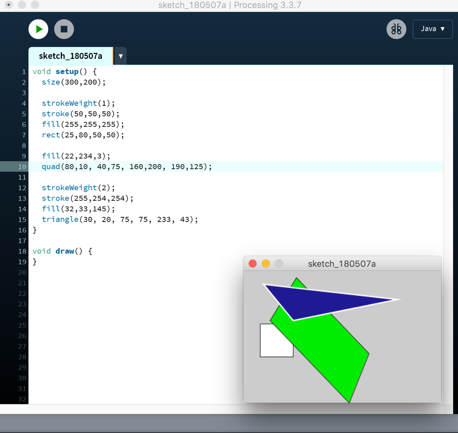
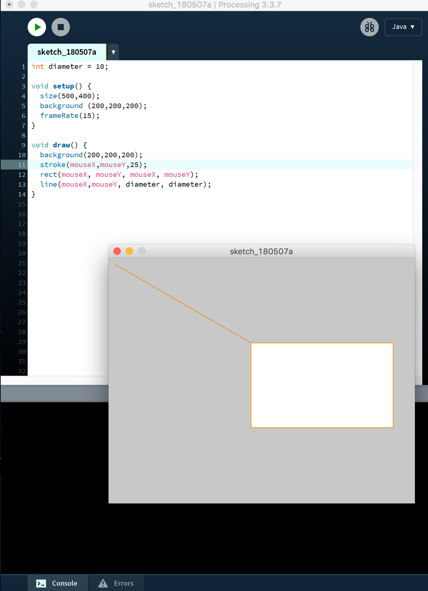
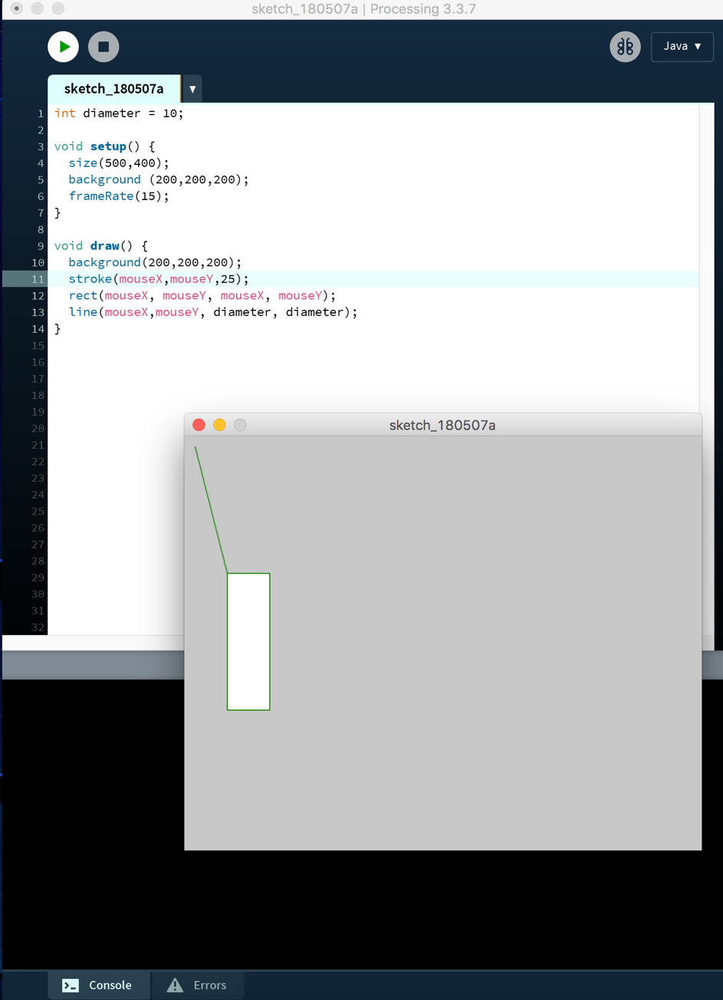
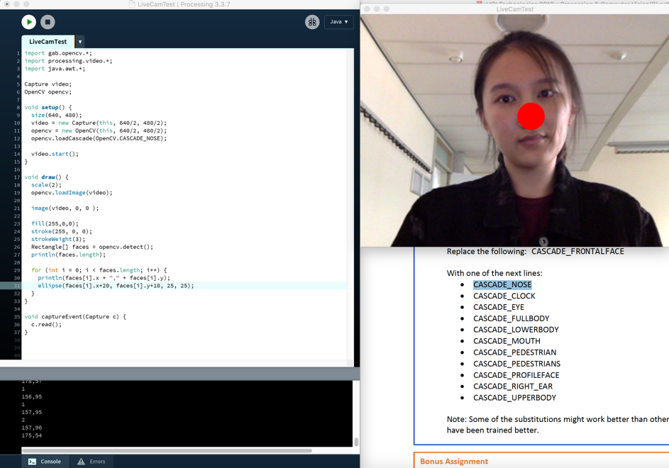
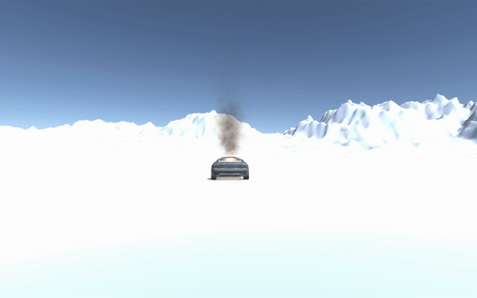

Workshops
Computer Vision
Voor de opdrachten onder computer vision is er gewerkt met het programma Processing, een open source programma om interactieve afbeeldingen en animaties te maken. Hieronder zijn de uitgewerkte opdrachten, waarbij een afbeeldingen te zien zijn van het resultaat en/of de code.
Opdracht 2
Opdracht 3
 Opdracht 4
Unity & project mapping
Voor deze opdrachten hebben we gewerkt in Unity en MadMapper. Unity is een programma waar je virtuele werelden kan vormen in 3D. Dit wordt dus ook vaak gebruikt om games te ontwerpen en ontwikkelen. Madmapper wordt gebruikt om een projectie te manipuleren, waardoor je zowel beel als licht kan besturen.
Opdracht Unity
Project mapping
Arduino
Verder hebben we nog gewerkt met Arduino, een opensource computerplatform waarbij objecten en apparaten op elkaar kunnen reageren door middel van kleine input en output onderdelen. Zo kan je bijvoorbeeld een gyroscoop aan een microfoon verbinden en dit op elkaar laten reageren. Hieronder zijn de uitgewerkte opdrachten en video's van de resultaten.